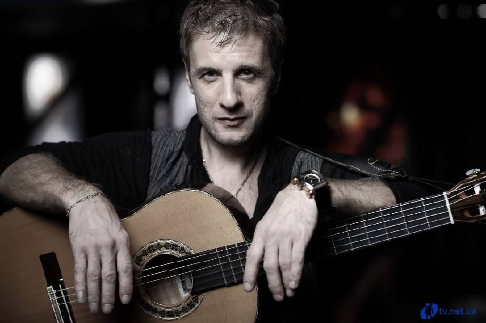
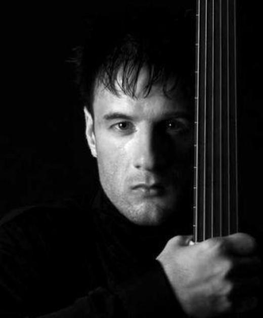
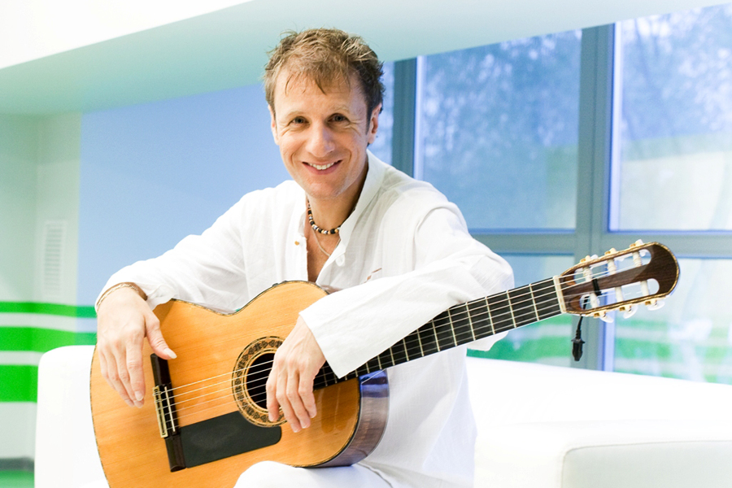

Вале́рий Миха́йлович Дидю́ля (белор. Валерый Міхайлавіч Дзiдзюля, 24 января 1969, Гродно, Белорусская ССР, СССР) — белорусский композитор, гитарист-виртуоз, лидер группы «Дидюля». Исполняет фолк-музыку и музыку в жанре фьюжн с влиянием стиля нью-эйдж.
Первую гитару Дидюля получил в пять лет в подарок от своей матери. С этого момента он начал «экспериментировать со звуком и гитарой»: ставил на гитару звукосниматель, датчик, подключал инструмент к самодельному усилителю. Вместе с друзьями посещал концерты, наблюдал, как играют на свадьбах. Позже был принят в качестве третьего гитариста в вокально-инструментальный ансамбль «Алые Зори» под руководством Николая Хитрика. Концерты проводились в разных городах, колхозах и совхозах, а позже в кооперативном ресторане.
После распада ансамбля Дидюля занялся звукорежиссёрской работой в гродненском ансамбле песни и танца «Белые Росы», где играли, пели и танцевали в основном польские, белорусские, украинские, цыганские народные танцы и мотивы. В составе этого коллектива Дидюля впервые побывал с гастролями в Европе — в Испании, Италии, Польше, Швейцарии, Франции, Германии. В Испании он познакомился со стилем фламенко — традиционным испанским музыкально-танцевальным стилем, который и повлиял на его окончательное становление
 (в творчестве Дидюли отслеживаются некоторые пассажи и ритмы, характерные для фламенко и других испанских направлений, но всё же фламенко эту музыку назвать нельзя). Первый альбом Дидюли вышел в 2000 году, в 2002 году Дидюля собрал группу музыкантов и начал активную гастрольную деятельность. С первых альбомов музыкант смело экспериментирует с электронным звучанием, гитарные пассажи удачно подчёркиваются плотными и ритмичными аранжировками в стиле хаус (стоит отметить ремикс проекта Astero на композицию «Фламенко»).
Дидюля является автором более 120 инструментальных композиций, сочетает в одном лице композитора, исполнителя собственных произведений и продюсера проекта «Дидюля». «Дидюля» является самым гастролирующим инструментальным коллективом России (120 концертов в год), на сцене вместе с Дидюлей в концертном действе принимают участие перкуссионисты (Рустем Бари и Александр Второв), клавишник (Хайбула Магомедов), бас-гитарист (Дмитрий Ершов) и духовая группа (Валерий Складанный и Рамиль Муликов).
Дидюля являлся продюсером творчества классического гитариста Дениса Асимовича, потерявшего зрение в раннем возрасте и ушедшего из жизни в 2008 году, в возрасте 33 лет.

6 декабря 2012 года увидел свет девятый студийный аудиоальбом Дидюли «Орнаментальный», в начале января 2013 года вышло коллекционное издание «LIVE in Kremlin» (2DVD+3CD). В концерт входит несколько композиций, которые (по словам самого Дидюли) никогда не были и не будут выпущены в студийной записи, по той причине, что музыкант их чувствует только в живом исполнении.
В ноябре 2013 года ДиДюЛя совместно с белорусским певцом Максом Лоренсом подал заявку на участие в национальном отборочном туре конкурса «Евровидение-2014» от Республики Беларусь и намерен представить песню «Now you’re gone», в которой выступил автором музыки, а слова написал Джо Линн Тёрнер, солист групп «Deep Purple» и «Rainbow». В постановку номера будет включен танец с элементами сурдоперевода, который станет своеобразным пересказом песни.